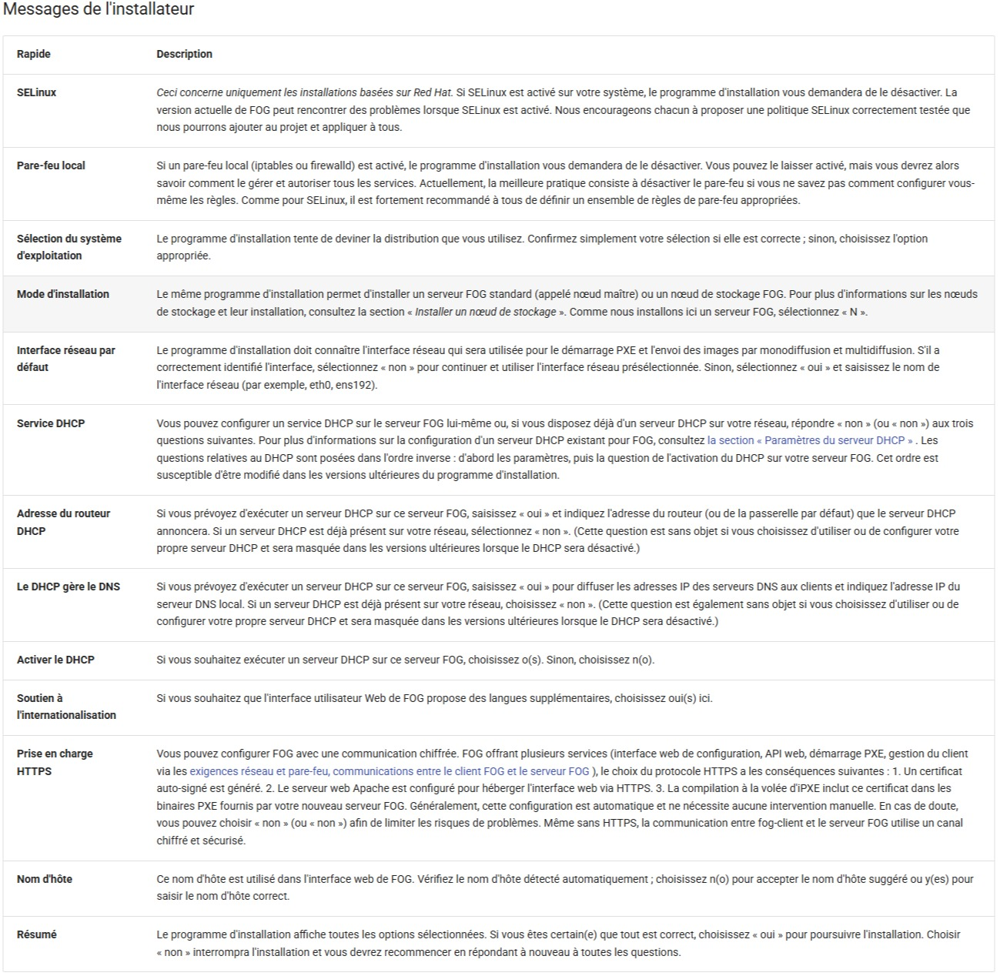

FOG - Installation
🧭 Procédure
🎯 Objectif
Installer FOG Project sur un serveur Linux pour le déploiement d’images.
📦 Portée
Serveur Debian / Ubuntu utilisé comme serveur PXE.
⚠️ Risques
- Mauvaise configuration DHCP
- Conflit avec serveur DHCP existant
✅ Prérequis
- Serveur Debian ou Ubuntu
- Accès root
- IP fixe configurée
- Accès Internet
IP fixe (exemple netplan)
sudo nano /etc/netplan/01-netcfg.yaml
1) Installation du serveur FOG
sudo apt update && sudo apt full-upgrade -y
sudo apt install -y curl git
cd fogproject-stable/bin
sudo ./installfog.sh
Au lancement de l'installateur FOG, une fenêtre s'affiche :

Une fois le processus terminé, se connecter via navigateur à l’adresse indiquée :
http://XXX.XXX.XXX.XXX/fog/management
ATTENTION
Ne pas faire "Entrée" tout de suite.
Lancer d’abord le navigateur pour initialiser la base de données.
2) Installation dnsmasq
sudo apt update && sudo apt full-upgrade -y
sudo apt install -y dnsmasq
dnsmasq --version
3) Créer le fichier de configuration dnsmasq
À adapter
Remplace 192.168.1.66 par l’IP de ton serveur FOG et ajuste le dhcp-range.
# ================================
# DNSMASQ ProxyDHCP pour FOG
# Debian 13
# ================================
# Ne pas faire serveur DNS
port=0
# Logs DHCP
log-dhcp
# Activer / Désactiver TFTP
#enable-tftp
#tftp-root=/tftpboot
# Ne pas écraser options DHCP
dhcp-no-override
# Détection du type de firmware
dhcp-vendorclass=BIOS,PXEClient:Arch:00000
dhcp-vendorclass=UEFI32,PXEClient:Arch:00006
dhcp-vendorclass=UEFI,PXEClient:Arch:00007
dhcp-vendorclass=UEFI64,PXEClient:Arch:00009
# BIOS Legacy
dhcp-boot=undionly.kpxe,,192.168.1.66
# UEFI
dhcp-boot=net:UEFI32,i386-efi/ipxe.efi,,192.168.1.66
dhcp-boot=net:UEFI,ipxe.efi,,192.168.1.66
dhcp-boot=net:UEFI64,ipxe.efi,,192.168.1.66
# Menu PXE
pxe-prompt="Booting FOG Client", 1
pxe-service=X86PC,"Boot to FOG",undionly.kpxe
pxe-service=X86-64_EFI,"Boot to FOG UEFI",ipxe.efi
pxe-service=BC_EFI,"Boot to FOG UEFI PXE-BC",ipxe.efi
# Mode ProxyDHCP
dhcp-range=192.168.1.0,proxy
4) Redémarrer et activer dnsmasq
sudo systemctl restart dnsmasq
sudo systemctl enable dnsmasq
5) Vérifier que le port 69 (TFTP) écoute
sudo ss -anu | grep :69
UNCONN 0 0 0.0.0.0:69
6) Vérifier que FOG fournit bien les fichiers PXE
ls /tftpboot
7) Ouvrir les ports pare-feu (si actif)
sudo apt install -y ufw
sudo ufw allow 69/udp
sudo ufw allow 4011/udp
sudo ufw allow 80
sudo ufw allow 443
sudo ufw reload
🧪 Vérifications finales
Démarrer un PC client
Boot réseau (PXE)
Vérifier apparition :
Booting FOG Client
Menu iPXE FOG
🔗 Liens utiles